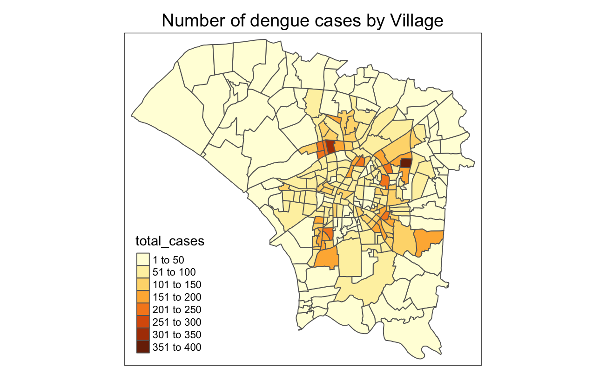

Code
pacman::p_load(tidyverse, sf, sfdep, tmap, lubridate, plotly)Dengue Hemorrhagic Fever (in short dengue fever) is one of the most widespread mosquito-borne diseases in the most tropical and subtropical regions. It is an acute disease caused by dengue virus infection which is transmitted by female Aedes aegypti and Aedes albopictus mosquitoes. In 2015, Taiwan had recorded the most severe dengue fever outbreak with more than 43,000 dengue cases and 228 deaths. Since then, the annual reported dengue fever cases were maintained at the level of not more than 200 cases. However, in 2023, Taiwan recorded 26703 dengue fever cases.
In this exercise, we would like to investigate:
If the distribution of dengue fever outbreak at Tainan City, Taiwan are independent from space and space and time.
If the outbreak is indeed spatial and spatio-temporal dependent,
where the clusters and outliers are, and
where the emerging hot spot/cold spot areas are.
In this exercise, we will be fulfilling the following tasks:
Use appropriate functions of sf and tidyverse to prepare the following geospatial data layer:
a study area layer in sf polygon features. It must be at village level and confined to the D01, D02, D04, D06, D07, D08, D32 and D39 counties of Tainan City, Taiwan.
a dengue fever layer within the study area in sf point features. The dengue fever cases should be confined to epidemiology week 31-50, 2023.
a derived dengue fever layer in spacetime s3 class of sfdep. It should contain, among many other useful information, a data field showing number of dengue fever cases by village and by epidemiology week.
Use the extracted data to perform global spatial autocorrelation analysis by using sfdep methods.
Use the extracted data to perform local spatial autocorrelation analysis by using sfdep methods.
Use the extracted data to perform emerging hotspot analysis by using sfdep methods.
Describe the spatial patterns revealed by the analysis.
For this take-home exercise, we will be using the two data sets:
| Type | Content | Format | Source |
|---|---|---|---|
| Geospatial | TAIWAN_VILLAGE_2020
|
ESRI shapefile | Historical map data of the village boundary: TWD97 longitude and latitude |
| Aspatial | Dengue_Daily.csv
|
csv | Dengue Daily Confirmed Cases Since 1998 |
In this exercise, the following R packages would be used:
Then, to install and/or load the R packages, we can use p_load() from the pacman package.
pacman::p_load(tidyverse, sf, sfdep, tmap, lubridate, plotly)Let’s begin by introducing and preparing our geospatial data set in R!
To import geospatial data, we will be using st_read() from the sf package.
taiwan_sf<- st_read(dsn= "data/geospatial",
layer = "TAINAN_VILLAGE")From the above, we can see that taiwan is in geodetic CRS TWD97.
Then, I will save the taiwan_sf object into my local disk so that I can easily load it again in the future.
write_rds(taiwan_sf, "/Users/binhui-ong/IS415-GAA/Take-home_Ex/Take-home_Ex02/data/rds/taiwan_sf.rds")To open the geospatial data in the future,
taiwan_sf <- readRDS("/Users/binhui-ong/IS415-GAA/Take-home_Ex/Take-home_Ex02/data/rds/taiwan_sf.rds")We can do the same for all future objects! However, I will not be displaying every of them in this exercise as it would look lengthy.
It is important to ensure our geospatial data is clean, in the correct coordinate reference system (CRS) and extracted to contain only relevant data to prevent complications later on.
In this section, we will go through the procedures to prepare our geospatial data.
Firstly, to check whether our data sets contain invalid geometries, we can apply the following code chunk:
length(which(st_is_valid(taiwan_sf) == FALSE))[1] 0st_is_valid() from sf package checks for valid geometries, returning a logical TRUE or FALSE. In the above code, we are checking the number of invalid geometries by looking for those with “FALSE”. Thankfully, taiwan_sf has no such invalid geometries, and we can move to the next step.
To check for missing values in our geographic data, we can apply the following code:
taiwan_sf[rowSums(is.na(taiwan_sf)) != 0, ]Simple feature collection with 649 features and 10 fields
Geometry type: POLYGON
Dimension: XY
Bounding box: xmin: 120.0269 ymin: 22.88751 xmax: 120.6563 ymax: 23.41374
Geodetic CRS: TWD97
First 10 features:
VILLCODE COUNTYNAME TOWNNAME VILLNAME VILLENG COUNTYID COUNTYCODE
1 67000280002 臺南市 歸仁區 六甲里 Liujia Vil. D 67000
2 67000350032 臺南市 安南區 青草里 Qingcao Vil. D 67000
3 67000150009 臺南市 七股區 溪南里 Xinan Vil. D 67000
4 67000150010 臺南市 七股區 七股里 Qigu Vil. D 67000
5 67000150008 臺南市 七股區 龍山里 Longshan Vil. D 67000
6 67000150017 臺南市 七股區 中寮里 Zhongliao Vil. D 67000
7 67000150004 臺南市 七股區 篤加里 Dujia Vil. D 67000
8 67000150007 臺南市 七股區 塩埕里 Yancheng Vil. D 67000
9 67000150022 臺南市 七股區 三股里 Sangu Vil. D 67000
10 67000150023 臺南市 七股區 十份里 Shifen Vil. D 67000
TOWNID TOWNCODE NOTE geometry
1 D33 67000280 <NA> POLYGON ((120.2725 22.95868...
2 D06 67000350 <NA> POLYGON ((120.1176 23.08387...
3 D22 67000150 <NA> POLYGON ((120.121 23.1355, ...
4 D22 67000150 <NA> POLYGON ((120.1312 23.1371,...
5 D22 67000150 <NA> POLYGON ((120.0845 23.13503...
6 D22 67000150 <NA> POLYGON ((120.126 23.16917,...
7 D22 67000150 <NA> POLYGON ((120.1585 23.15376...
8 D22 67000150 <NA> POLYGON ((120.0636 23.17069...
9 D22 67000150 <NA> POLYGON ((120.0422 23.11545...
10 D22 67000150 <NA> POLYGON ((120.1201 23.09364...Seems like all observations contain missing values, and we could see from the above result that it is due to the “NOTE” field. Let’s try checking the data frame again while excluding the “Note” field using select() from the dplyr package.
taiwan_sf[rowSums(is.na(taiwan_sf %>% select(-NOTE))) != 0, ]Simple feature collection with 0 features and 10 fields
Bounding box: xmin: NA ymin: NA xmax: NA ymax: NA
Geodetic CRS: TWD97
[1] VILLCODE COUNTYNAME TOWNNAME VILLNAME VILLENG COUNTYID
[7] COUNTYCODE TOWNID TOWNCODE NOTE geometry
<0 rows> (or 0-length row.names)Yay, seems like we have no missing values if we exclude the “Note” field!
To check the CRS of our taiwan_sf data set, we can use st_crs() from sf package as shown below.
st_crs(taiwan_sf)Coordinate Reference System:
User input: TWD97
wkt:
GEOGCRS["TWD97",
DATUM["Taiwan Datum 1997",
ELLIPSOID["GRS 1980",6378137,298.257222101,
LENGTHUNIT["metre",1]]],
PRIMEM["Greenwich",0,
ANGLEUNIT["degree",0.0174532925199433]],
CS[ellipsoidal,2],
AXIS["geodetic latitude (Lat)",north,
ORDER[1],
ANGLEUNIT["degree",0.0174532925199433]],
AXIS["geodetic longitude (Lon)",east,
ORDER[2],
ANGLEUNIT["degree",0.0174532925199433]],
USAGE[
SCOPE["Horizontal component of 3D system."],
AREA["Taiwan, Republic of China - onshore and offshore - Taiwan Island, Penghu (Pescadores) Islands."],
BBOX[17.36,114.32,26.96,123.61]],
ID["EPSG",3824]]We can see that our data set is in TWD97 crs (EPSG: 3824).
To speed up our analysis later, we will select and keep only some assumingly relevant fields using select() from the dplyr package. In this step, I will keep VILLCODE, VILLNAME, VILLENG, TOWNID, TOWNCODE and geometry fields.
taiwanstudy_sf <- taiwanstudy_sf %>% select(VILLCODE, VILLNAME, VILLENG, TOWNID, TOWNCODE, geometry)Next, to extract our study areas D01, D02, D04, D06, D07, D08, D32 and D39 counties of Tainan City, Taiwan, we can use filter() from the dplyr package, and | which represents “OR”.
taiwanstudy_sf <- taiwan_sf %>% filter(TOWNID == "D01" | TOWNID == "D02" | TOWNID == "D04" | TOWNID == "D06" | TOWNID == "D07" | TOWNID == "D08" | TOWNID == "D32" | TOWNID == "D39")To visualize our study area, we can employ plot() and st_geometry() from sf package.
plot(st_geometry(taiwanstudy_sf))
Looks great! We’ve successfully extracted our study area later in sf polygon features, at the village level confined to the D01, D02, D04, D06, D07, D08, D32 and D39 counties of Tainan City, Taiwan.
The first step to dealing with our aspatial data is to import it into our R environment. To do so, we can use read_csv() from the readr package.
Dengue_Daily <- read_csv("data/aspatial/Dengue_Daily.csv")Next, we will use select() from the dplyr package again to select the relevant fields for our study. Here, we would select 發病日 which is the onset date of symptoms, and 最小統計區中心點X and 最小統計區中心點Y which are the x-coordinates and y-coordinates of the dengue cases.
Dengue_Daily <- Dengue_Daily %>% select(發病日, 最小統計區中心點X, 最小統計區中心點Y)
Dengue_Daily# A tibble: 106,861 × 3
發病日 最小統計區中心點X 最小統計區中心點Y
<date> <chr> <chr>
1 1998-01-02 120.505898941 22.464206650
2 1998-01-03 120.453657460 22.466338948
3 1998-01-13 121.751433765 24.749214667
4 1998-01-15 120.338158907 22.630316700
5 1998-01-20 121.798235373 24.684507639
6 1998-01-22 None None
7 1998-01-23 121.547480075 24.982467229
8 1998-01-26 121.500936346 25.139302723
9 1998-02-11 120.209079313 22.978859098
10 1998-02-16 120.313207729 22.724216594
# ℹ 106,851 more rowsAgain, it is always a good practice to check for missing values. From the earlier code, we see that missing values are denoted as “None” in this data set. Hence, we will use filter() from the dplyr package, and look for coordinate values that contain “None”.
Dengue_Daily %>% filter(最小統計區中心點X == "None" | 最小統計區中心點Y == "None")# A tibble: 780 × 3
發病日 最小統計區中心點X 最小統計區中心點Y
<date> <chr> <chr>
1 1998-01-22 None None
2 1998-05-11 None None
3 1998-07-25 None None
4 1998-07-26 None None
5 1998-07-27 None None
6 1998-07-30 None None
7 1998-09-02 None None
8 1998-09-14 None None
9 1998-09-25 None None
10 2000-03-17 None None
# ℹ 770 more rowsWow, there are 780 records with no x- and y- coordinates! To prevent complications in later steps of analysis, we should remove them. To do so, we can apply the following code.
Dengue_Daily <- Dengue_Daily %>% filter(最小統計區中心點X != "None" | 最小統計區中心點Y != "None")Now, we’re done removing the records with missing coordinates.
Since our coordinates are in differet columns, it only makes sense to combine them to turn them into useful data. To do so, we can use the st_as_sf from the sf package, with the respective x- and y- coordinates in the “coords” argument, and the crs of the data set in the “crs” argument.
DengueDaily_sf <- st_as_sf(Dengue_Daily, coords = c("最小統計區中心點X", "最小統計區中心點Y"), crs = 3824)DengueDaily_sfSimple feature collection with 106081 features and 1 field
Geometry type: POINT
Dimension: XY
Bounding box: xmin: 118.3081 ymin: 21.92574 xmax: 121.9826 ymax: 26.15617
Geodetic CRS: TWD97
# A tibble: 106,081 × 2
發病日 geometry
* <date> <POINT [°]>
1 1998-01-02 (120.5059 22.46421)
2 1998-01-03 (120.4537 22.46634)
3 1998-01-13 (121.7514 24.74921)
4 1998-01-15 (120.3382 22.63032)
5 1998-01-20 (121.7982 24.68451)
6 1998-01-23 (121.5475 24.98247)
7 1998-01-26 (121.5009 25.1393)
8 1998-02-11 (120.2091 22.97886)
9 1998-02-16 (120.3132 22.72422)
10 1998-02-17 (120.34 22.60703)
# ℹ 106,071 more rowsNice, our coordinates are sensibly put together now!
Then, to limit our the study time frame to epidemiology week 31-50, 2023, we once again use filter() from the dplyr package. We also employ year() and epiweek() from the lubridate package to identify and extract our required time frame.
Denguedates_sf <- DengueDaily_sf %>% filter(year(發病日) == 2023) %>% filter(epiweek(發病日) >=31 & epiweek(發病日)<= 50)It is time to combine our geospatial and aspatial sf data frames! Here, we will be using st_join() from the dplyr package.
Firstly, let’s extract the Dengue observations that are within the regions of study. To do so, we can apply use st_join() from the sf package and apply the following code.
denguepoints_sf <- Denguedates_sf %>% st_join(taiwanstudy_sf, join = st_within)The above code gives us the dengue fever layer within the study area in sf point features, confined to epidemiology weeks 31-50, 2023. Yay!
denguepoints_sfSimple feature collection with 10904 features and 3 fields
Geometry type: GEOMETRY
Dimension: XY
Bounding box: xmin: 118.3081 ymin: 21.98551 xmax: 121.8983 ymax: 25.20237
Geodetic CRS: TWD97
# A tibble: 10,904 × 4
# Groups: VILLENG [249]
VILLENG 發病日 cases geometry
<chr> <date> <int> <GEOMETRY [°]>
1 Andong Vil. 2023-08-02 1 POINT (120.2143 23.03558)
2 Andong Vil. 2023-08-16 1 POINT (120.2141 23.0306)
3 Andong Vil. 2023-08-17 1 POINT (120.2146 23.03379)
4 Andong Vil. 2023-09-01 1 POINT (120.2163 23.0386)
5 Andong Vil. 2023-09-06 1 POINT (120.2143 23.03558)
6 Andong Vil. 2023-09-08 1 POINT (120.2136 23.03202)
7 Andong Vil. 2023-09-12 1 POINT (120.2133 23.03384)
8 Andong Vil. 2023-09-17 2 MULTIPOINT ((120.2145 23.03455), (120.2144 23.0…
9 Andong Vil. 2023-09-20 1 POINT (120.2146 23.03379)
10 Andong Vil. 2023-09-23 2 MULTIPOINT ((120.2144 23.03224), (120.2155 23.0…
# ℹ 10,894 more rowsTo find out identify which village each observation is in,
dengue_sf <- st_join(taiwanstudy_sf, denguepoints_sf, join = st_contains)To select our relevant columns, we once again use select() from dplyr package.
dengue_sf <- dengue_sf %>% select(VILLENG.x, TOWNID.x, 發病日, geometry) %>% rename(VILLENG = VILLENG.x) %>% rename(TOWNID = TOWNID.x)dengue_sfSimple feature collection with 18817 features and 3 fields
Geometry type: POLYGON
Dimension: XY
Bounding box: xmin: 120.0627 ymin: 22.89401 xmax: 120.2925 ymax: 23.09144
Geodetic CRS: TWD97
First 10 features:
VILLENG TOWNID 發病日 geometry
1 Qingcao Vil. D06 2023-09-14 POLYGON ((120.1176 23.08387...
1.1 Qingcao Vil. D06 2023-10-12 POLYGON ((120.1176 23.08387...
2 Bao'an Vil. D32 2023-08-04 POLYGON ((120.2304 22.93544...
2.1 Bao'an Vil. D32 2023-09-10 POLYGON ((120.2304 22.93544...
2.2 Bao'an Vil. D32 2023-09-11 POLYGON ((120.2304 22.93544...
2.3 Bao'an Vil. D32 2023-09-16 POLYGON ((120.2304 22.93544...
2.4 Bao'an Vil. D32 2023-09-19 POLYGON ((120.2304 22.93544...
2.5 Bao'an Vil. D32 2023-09-20 POLYGON ((120.2304 22.93544...
2.6 Bao'an Vil. D32 2023-09-27 POLYGON ((120.2304 22.93544...
2.7 Bao'an Vil. D32 2023-09-29 POLYGON ((120.2304 22.93544...You might be wondering, why did we keep the TOWNID column if our study is based on villages? Apparently, there are villages with the same names that are spread across different regions, classified in different towns. Arguably, the geometries column is sufficient to tell us that. However, due to the less readable nature of the geometry values, we might want to preserve our TOWNID first, for easier interpretation of our records.
One example of villages with the same names, located separately is the “成功里” village (VILLENG == “Chenggong Vil.”) as shown below
plot(st_geometry(filter(taiwanstudy_sf, VILLENG == "Chenggong Vil.")))
Then, to derive the aggregated dengue observations data (without classifying our data based on date) based on village boundaries and town ID, as polygons sf data frame,
dengue_aggregated_sf <- st_join(taiwanstudy_sf, dengue_sf, join = st_contains) %>% group_by (VILLENG.x, TOWNID.x) %>% summarize(total_cases= n())Then, to check if we have prepared our data correctly thus far, we can plot a choropleth map using the various functions from the tmap package. Here, we use dengue_aggregated_sf, which aggregates all observations based on villages, as it probably gives a more intuitive and sensible check.
tm_shape(dengue_aggregated_sf) +
tm_polygons("total_cases") +
tm_layout(main.title = "Number of dengue cases by Village",
main.title.position = "center",
main.title.size = 1.2,
legend.height = 0.45,
legend.width=0.35,
frame = TRUE) +
tm_borders(alpha=0.5)
What is Global Spatial Autocorrelation Analysis?
Global spatial autocorrelation analysis is a statistical technique used to assess whether spatial patterns (the arrangement of values across geographic locations) in a dataset are randomly distributed or exhibit clustering or dispersion. It answers whether similar values tend to be located near each other (positive autocorrelation) or whether dissimilar values tend to be near each other (negative autocorrelation).
Key Points:
Focuses on the overall pattern: It provides a general impression of spatial clustering or dispersion, not identifying specific clusters or outliers.
Applicable to various data: It can be applied to various types of data with spatial components, such as disease incidence, crime rates, or environmental variables.
Common statistic: A popular statistic used for global spatial autocorrelation is Moran’s I. This index ranges from -1 (perfect negative autocorrelation) to 1 (perfect positive autocorrelation), with 0 indicating no spatial autocorrelation.
In this section, we will be performing the global spatial autocorrelation analysis using sfdep methods to discover whether the distribution of dengue fever outbreak in Tainan City are randomly distributed, using Moran’s I statistic.
Since we are conducting the analysis only in terms of space (ignoring time variables), we can use the aggregated dengue observations based on only village boundaries, which we have derived earlier as dengue_aggregated_sf!
dengue_aggregated_sfSimple feature collection with 249 features and 2 fields
Geometry type: GEOMETRY
Dimension: XY
Bounding box: xmin: 120.0627 ymin: 22.89401 xmax: 120.2925 ymax: 23.09144
Geodetic CRS: TWD97
# A tibble: 249 × 3
VILLENG.x total_cases geometry
<chr> <int> <POLYGON [°]>
1 Andong Vil. 67 ((120.2164 23.0404, 120.2154 23.04033, 120.2153 23.0…
2 Anfu Vil. 311 ((120.1932 23.0294, 120.1929 23.02938, 120.1926 23.0…
3 Anhe Vil. 73 ((120.2258 23.04424, 120.2219 23.03862, 120.2219 23.…
4 Ankang Vil. 97 ((120.2269 23.01413, 120.2274 23.01331, 120.2277 23.…
5 Anqing Vil. 111 ((120.2113 23.04414, 120.2111 23.04413, 120.2108 23.…
6 Anshun Vil. 34 ((120.2136 23.05601, 120.2136 23.05586, 120.2135 23.…
7 Anxi Vil. 110 ((120.2123 23.03689, 120.212 23.03685, 120.2121 23.0…
8 Bao'an Vil. 19 ((120.2304 22.93544, 120.2301 22.93511, 120.2301 22.…
9 Beihua Vil. 82 ((120.2034 23.00257, 120.2032 23.0022, 120.2028 23.0…
10 Beimen Vil. 249 ((120.2176 23.02032, 120.2173 23.02013, 120.2172 23.…
# ℹ 239 more rowsTo get the contiguity weight matrix of neighbours using the Queen’s method, we can apply the following code:
wm_q <- dengue_aggregated_sf %>% mutate(nb = st_contiguity(geometry),
wt = st_weights(nb,
style = "W"),
.before=1)wm_qSimple feature collection with 249 features and 4 fields
Geometry type: GEOMETRY
Dimension: XY
Bounding box: xmin: 120.0627 ymin: 22.89401 xmax: 120.2925 ymax: 23.09144
Geodetic CRS: TWD97
# A tibble: 249 × 5
nb wt VILLENG.x total_cases geometry
* <nb> <list> <chr> <int> <POLYGON [°]>
1 <int [5]> <dbl [5]> Andong Vil. 67 ((120.2164 23.0404, 120.2154 23.…
2 <int [5]> <dbl [5]> Anfu Vil. 311 ((120.1932 23.0294, 120.1929 23.…
3 <int [7]> <dbl [7]> Anhe Vil. 73 ((120.2258 23.04424, 120.2219 23…
4 <int [3]> <dbl [3]> Ankang Vil. 97 ((120.2269 23.01413, 120.2274 23…
5 <int [4]> <dbl [4]> Anqing Vil. 111 ((120.2113 23.04414, 120.2111 23…
6 <int [3]> <dbl [3]> Anshun Vil. 34 ((120.2136 23.05601, 120.2136 23…
7 <int [8]> <dbl [8]> Anxi Vil. 110 ((120.2123 23.03689, 120.212 23.…
8 <int [5]> <dbl [5]> Bao'an Vil. 19 ((120.2304 22.93544, 120.2301 22…
9 <int [6]> <dbl [6]> Beihua Vil. 82 ((120.2034 23.00257, 120.2032 23…
10 <int [4]> <dbl [4]> Beimen Vil. 249 ((120.2176 23.02032, 120.2173 23…
# ℹ 239 more rowsNext, we can perform the global moran’s I test using the code below.
global_moran_test(wm_q$total_cases,
wm_q$nb,
wm_q$wt)
Moran I test under randomisation
data: x
weights: listw
Moran I statistic standard deviate = 12.062, p-value < 2.2e-16
alternative hypothesis: greater
sample estimates:
Moran I statistic Expectation Variance
0.440989474 -0.004032258 0.001361217 From the test, we can see that under the assumption of spatial random distribution, the p-value < 2.2e-16. This allows us to infer that the number of dengue cases are not spatially randomly distributed across villages at 95% confidence level, with significant signs of clustering/outliers.
Very importantly, we should also conduct the global moran’s I permutation test.
set.seed(1234)global_moran_perm(wm_q$total_cases,
wm_q$nb,
wm_q$wt,
nsim=79)
Monte-Carlo simulation of Moran I
data: x
weights: listw
number of simulations + 1: 80
statistic = 0.44099, observed rank = 80, p-value < 2.2e-16
alternative hypothesis: two.sidedFrom the global moran’s I permutation test, under the assumption of spatial random distribution, the p-value < 2.2e-16. This further confirms that the number of dengue cases are not spatially randomly distributed across villages at 95% confidence level.